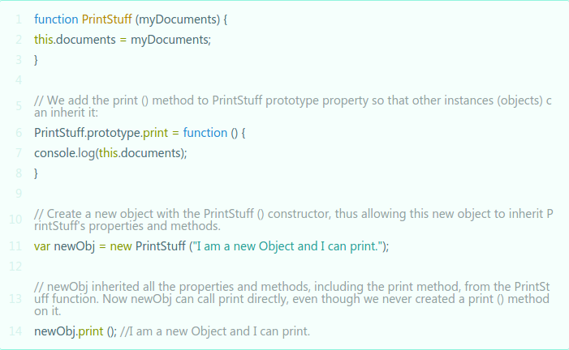
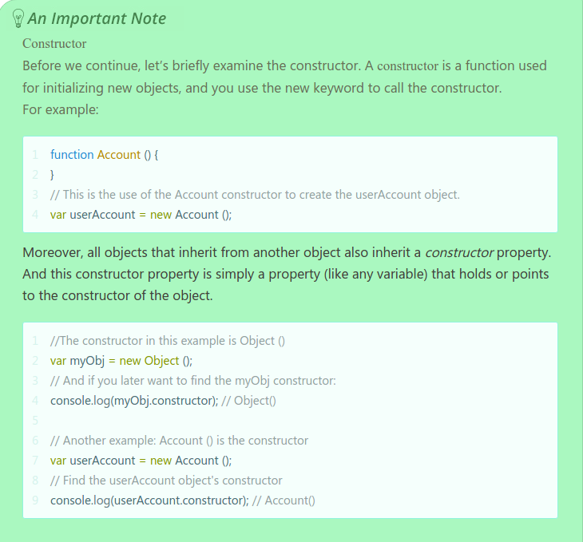
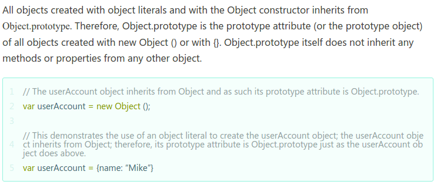
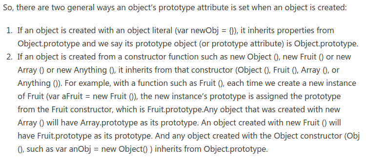
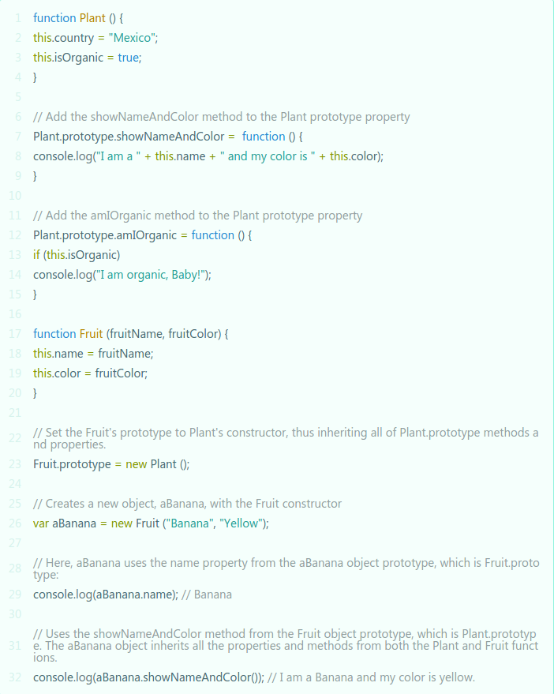
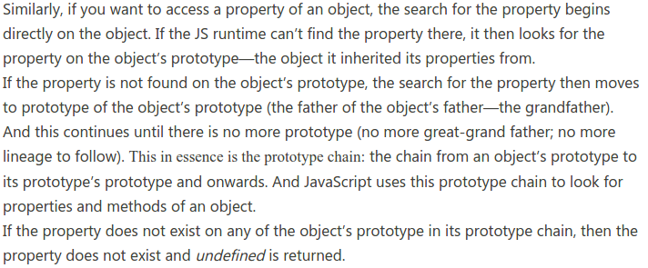
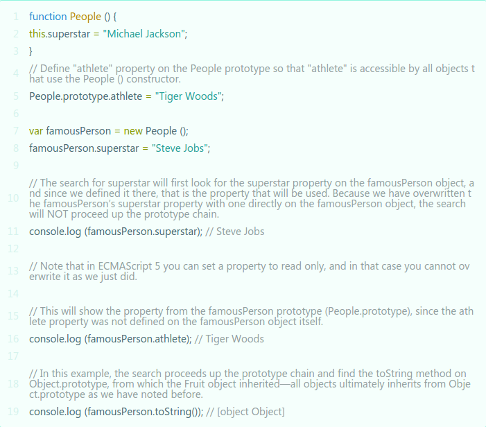

JavaScript Prototypes
A small cheat-sheet
All JavaScript functions have a prototype property that is empty by default. You use prototype to attach properties and methods when you want to allow instances of your function to use those added properties and methods. The prototype property is not enumerable which means you can't loop through it. All examples are from: javascriptissexy.com

Prototype Attribute
The prototype attribute is is like the "characteristic" of the object; this characteristic or attribute tells us the "parent" of the object. The attribute points towards the objects parent which it inherited its properties from. The prototype attribute is often called the prototype object, and it is set automatically when you create a new object. Remember, every object inherits properties from some other object, and it is this other object that is the objects prototype attribute "the parent". The prototype in an object is like a little guide book to who the parent is and what methods the parent gave to its child.
Quick note about constructors

Prototype Attribute of Objects created with new Object() of Object literals
On the other hand any object created with the "new" keyword and any other constructor than Object(), get their prototype from the constructor function. As seen in the first image. Similarly, something like
var myArray = new Array() gets its prototype and inherits from Array.prototype.
Some general rules

Why use Prototype
All inheritance is made possible through prototype. This would be like class inheritance in other languages. Demonstration of inheritance:
Prototype chain. Or looking through the ancestors to find where the property came from.
An example of a chain:

Godspeed,
Logan